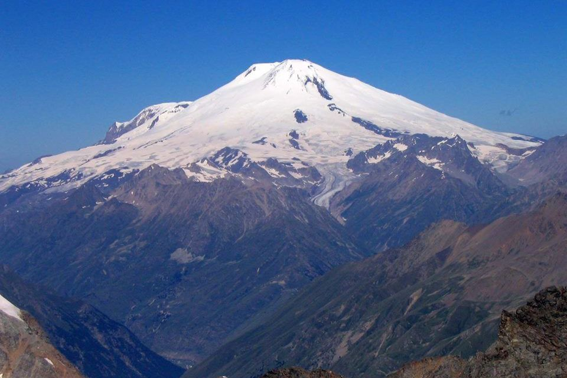
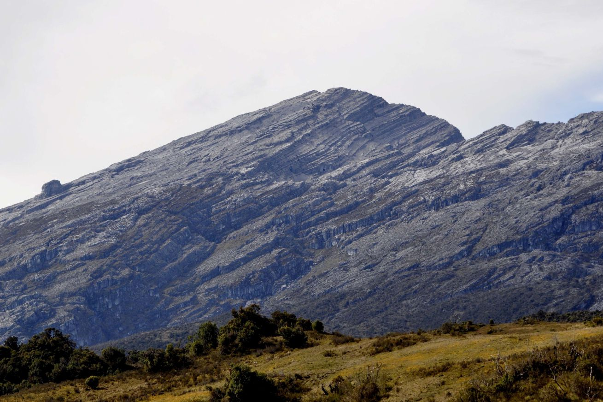
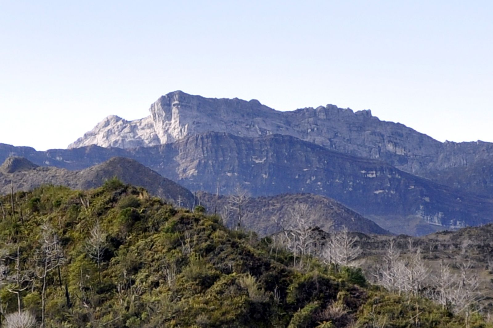

ada banyak gunung tertinggi yang menjadi tempat favorit bagi para pendaki gunung untuk dijelajahi.
Nah, berikut ini 3 gunung tertinggi di Indonesia yang wajib kalian ketahui dan semuanya terletak di Papua loh.

Gunung Jaya Wijaya
Klik untuk info lebih lanjut
Puncak Jaya Wijaya adalah puncak tertinggi di Indonesia yang terletak di Provinsi Papua. memiliki ketinggian 4.884 Mdpl dan dikelilingi oleh gletser tropis yang disebut Gletser Carstensz. Gletser ini satu-satunya gletser tropis di Indonesia. Puncak Jaya Wijaya juga termasuk dalam 7 puncak tertinggi di dunia (seven summit). pendakian ke puncak ini perlu persiapan ekstra.

Puncak Mandala
Klik untuk info lebih lanjut
Dengan ketinggian 4.760 mdpl, Puncak Mandala adalah gunung tertinggi ke-2 di Indonesia setelah Puncak Jaya. Puncak Mandala membentuk bagian Pegunungan Bintang bagian timur dan berada dekat perbatasan Papua Nugini. Puncak ini dulunya ditutupi oleh salju, namun, akibat pemanasan global, salju digunung ini perlahan mulai menghilang.

Puncak Trikora
Klik untuk info lebih lanjut
Puncak Trikora atau Ettiakup adalah gunung tertinggi ke-3, terdapat di Papua. dengan ketinggian 4.751 mdpl, Puncak ini mempunyai kawasan hutan Dipterokarp Bukit, hutan Dipterokarp Atas, hutan Montane, dan Hutan Ericaceous/hutan gunung.Jalur pendakian yang curam, sering dianggap lebih sulit daripada Jayawijaya